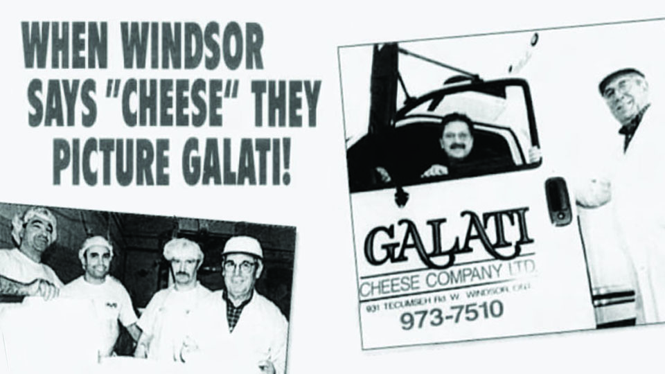

Image of Ally Peddie, creator of the "A Slice of Windsor" website, holding a large "Original Super Pizza" from Antonino's Original Pizza.
A Slice of Windsor is an undergraduate research project in partnership with the Canadian Business History Association. The goal of this project is to examine the history of the pizza industry in Windsor. Detroit and American industries often overshadow Windsor's identity. Even though Windsor is known for its automotive industry, this is largely due to the expansion of American companies into Windsor.
The idea for this project stemmed from a love for pizza and a debate over whether Windsor has its own identity. This project will examine how Windsor has developed a unique Italian-Canadian identity through its pizza industry. In addition, this project will explore how Windsor's local pizzerias have been a space for immigrant communitees and Windsor residents to build a sense of family. This project aims to examine the history of Windsor-style pizzerias from early Italian immigration to international recognition. Although American cities like New York, Chicago, and Detroit each have their own pizza styles, Windsor has developed a world-class pizza experience.
This project is divided into five sections: Early Italian Immigration, The Creation of Windsor Pizza, Windsor's Pizzerias, Sticking to the Recipe (Windsor Pizza vs Big Chains), and Maintaining a Legacy. These sections will be accompanied by videos that further expand on these topics.
This project also includes lesson resources for educators to use in history and food and culture classrooms. This webpage is interactive for students, pizza and history lovers, and academics.
Windsor’s pizza has its own unique pizza style that has gained notoriety, but what makes a Windsor-style pizza? The following sections detail the background and formation of Windsor-style pizza. Many of Windsor’s pizza makers today state that Volcano’s Pizzeria started it all.
Windsor-style pizza is known for its cornmeal-dusted crust, zesty sauce, canned mushrooms, shredded pepperoni, and Galati cheese, all of which trace back to Volcano’s Pizza. Courtesy of Adele Gualtieri-Amato (daughter of Frank Gualtieri, co-founder of Volcano’s), the original Volcano’s pizza recipe includes:
Combine 1 1/4 cups of flour, yeast, and salt in a large mixing bowl. Add water and oil. With an electric mixer, beat on low for 30 seconds, scraping the bowl. Beat on high for 3 minutes. Using a wooden spoon, stir in as much of the remaining flour as possible.
Turn dough out on a lightly floured surface. Knead in enough remaining flour to make a moderately stiff dough that is smooth and elastic (6–8 minutes total). Cover and let rest for 10 minutes.
Grease a medium pizza pan. If desired, sprinkle with cornmeal. Roll dough into a circle and transfer to the prepared pan. Build up edges slightly. Do not let rise.
Add sauce, cheese, and toppings. Uniondale-brand mozzarella (produced in Windsor by Galati Cheese) and Success-brand canned mushrooms are recommended.
Bake at 450°F for 15 minutes or until bubbly.3
The Volcano’s recipe is what gave Windsor pizza its signature style. However, the recipe now used in many Windsor pizzerias has been modified over generations. According to his son Joe, owner of Antonino’s Pizza, the current recipe used by many pizzerias in Windsor includes different ingredient ratios in the sauce and dough, along with additional spices.4
Despite these changes, Windsor’s pizzerias continue to stick to their roots, still using Galati Cheese, shredded pepperoni, and canned mushrooms. Although many pizzerias in Windsor today offer a variety of pizza options, they continue to maintain the signature Windsor style.
Image of founder, Giuseppe Giusto (“Joe”) Galati. Retrieved from Galati Cheese.

Galati Cheese Advertisement. Retrieved from Galati Cheese.
Many of Windsor’s pizza makers credit Volano’s Pizzeria as a foundational influence in the development of Windsor-style pizza, with one constant across recipes being the cheese. While recipes have evolved across generations, certain core elements have remained unchanged. Most notably, the cheese has stayed consistent. Nearly all Windsor-style pizzas use Galati Cheese, a locally owned company that produces the 25% Uniondale mozzarella commonly associated with this regional style.
Galati Cheese Company was founded in 1967 by Italian immigrants seeking improved economic opportunities in Canada. The Mannina family initially established the business, which was later acquired by the Galati family, who continue to operate it today. Under Joe Galati’s leadership, the company has continued producing traditional Italian-style cheeses in Windsor while also maintaining strong ties to the city’s Italian-Canadian community. Today, Galati Cheese operates a retail location and supplies local grocers, independent businesses, and many Windsor-style pizzerias.5
Although cheese may seem like a simple ingredient, it plays a defining role in distinguishing Windsor pizza from other regional styles. Many local pizzerias emphasize the importance of high-quality, locally produced ingredients such as Galati cheese. The product is vastly different from standard grocery-store mozzarella, which is processed differently. The use of Galati cheese reinforces the family and immigrant-run character of Windsor’s pizza industry.